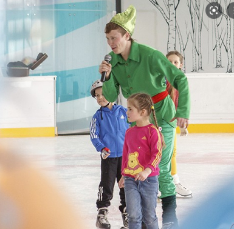

Обращаем Ваше внимание, что во время массовых катаний запрещается выходить на лед с клюшками и длинномерными предметами, а также отрабатывать элементы фигурного катания являющиеся потенциально опасными для окружающих (прыжки, выбросы, вращения). В "Час хоккея" выход на лед осуществляется строго в полной хоккейной экипировке
ПУБЛИЧНАЯ ОФЕРТА (ПРЕДЛОЖЕНИЕ)
о заключении договора на оказание услуг массового катания, договора оказания услуг «Час хоккея», аренды инвентаря и шкафчика для вещей, договора оказания услуг по предоставлению спортивных залов, услуг по проведению индивидуальных занятий с тренером.
СТАТЬЯ 1. ОБЩИЕ ПОЛОЖЕНИЯ
- соответствии со статьей 437 Гражданского Кодекса Российской Федерации данный документ, адресованный физическим и юридическим лицам, именуемым далее по тексту ПОЛЬЗОВАТЕЛЬ, является официальным, публичным и безотзывным предложением Общества с ограниченной ответственностью «АРЕНА», именуемое далее по тексту ИСПОЛНИТЕЛЬ/АРЕНДОДАТЕЛЬ, в лице Генерального директора Оборок Юрия Николаевича, действующего на основании Устава, заключить договор на оказание услуг массового катания, договора оказания услуг «Час хоккея», договора оказания услуг по предоставлению спортивных залов, аренды инвентаря и шкафчика для вещей, аренды помещений (далее-Договор) на указанных ниже условиях.
- Полным и безоговорочным акцептом (принятием) настоящей публичной оферты является оплата ПОЛЬЗОВАТЕЛЕМ соответствующих услуг массового катания, договора оказания услуг «Час хоккея», договора оказания услуг по предоставлению спортивных залов, аренды инвентаря и шкафчика для вещей, аренды помещений по Прейскуранту услуг, установленной ООО «АРЕНА» в порядке, предусмотренном настоящей офертой (предложением) (п.3 ст. 438 ГК РФ). Оплата ПОЛЬЗОВАТЕЛЕМ услуг/аренды по Прейскуранту услуг установленной Приказами свидетельствует о заключении соответствующего оплате договора оказания услуг массового катания, договора оказания услуг «Час хоккея», договора оказания услуг по предоставлению спортивных залов, аренды инвентаря и шкафчика для вещей, аренды помещений на условиях, установленных в настоящем документе, а также о согласии ПОЛЬЗОВАТЕЛЯ с соответствующими Правилами поведения на ледовой арене в период проведения массовых катаний/Правилами поведения на ледовой арене в период проведения «Часа хоккея»/Правилами поведения в спортивных залах.
- Факт оплаты подтверждается наличием билета/чека. В билете/чеке может быть указано несколько услуг.
- Оферта вступает в силу со дня ее размещения на сайте ИСПОЛНИТЕЛЯ https://shans-arena.ru в сети Интернет (далее – Сайт) и/или на информационном стенде, расположенном в общедоступном месте на территории Спортивного комплекса по адресу: Санкт-Петербург, ул. Кантемировская, д.37, лит. А. (далее – Спортивный комплекс). Срок действия настоящей Публичной оферты устанавливается до момента отзыва настоящей Публичной оферты ИСПОЛНИТЕЛЕМ путем ее удаления с Сайта в сети Интернет и с информационного стенда Спортивного комплекса.
- ИСПОЛНИТЕЛЬ/АРЕНДОДАТЕЛЬ имеет право вносить изменения/дополнения в Стоимость, в условия данной Публичной оферты и изменения/дополнения к публичной оферте без предварительного согласования с ПОЛЬЗОВАТЕЛЕМ. Информация о таких изменениях может быть получена на информационном стенде, расположенном в общедоступном месте на территории Спортивного комплекса или на Сайте ИСПОЛНИТЕЛЯ/АРЕНДОДАТЕЛЯ в сети Интернет. Вышеуказанные изменения/дополнения вступают в силу с момента их размещения на Сайте ИСПОЛНИТЕЛЯ в сети Интернет и/или на информационном стенде Спортивного комплекса, если иной срок не указан ИСПОЛНИТЕЛЕМ при таком размещении. Эти изменения/дополнения не действуют в отношении взаимных обязательств ИСПОЛНИТЕЛЯ и соответствующего ПОЛЬЗОВАТЕЛЯ, заключивших соответствующий договор до размещения изменений/дополнений условий настоящей Публичной оферты на Сайте ИСПОЛНИТЕЛЯ в сети Интернет или информационном стенде Спортивного комплекса. ПОЛЬЗОВАТЕЛЬ обязуется самостоятельно и своевременно знакомиться со всеми изменениями/дополнениями, вносимыми ИСПОЛНИТЕЛЕМ в настоящую публичную оферту и Стоимость услуг.
- ИСПОЛНИТЕЛЬ/АРЕНДОДАТЕЛЬ вправе изменять режим работы ледовой арены (катка) и Спортивного комплекса без предварительного согласования с ПОЛЬЗОВАТЕЛЕМ при условии размещения соответствующей информации на информационном стенде Спортивного комплекса и/или на своем Сайте.
- Массовые катания, «Час хоккея» проводятся только в заранее объявленное время, информация о котором вывешивается на информационном стенде Спортивного комплекса и/или на официальном сайте ИСПОЛНИТЕЛЯ/АРЕНДОДАТЕЛЯ.
- Акцепт (принятие) настоящей публичной оферты ПОЛЬЗОВАТЕЛЕМ означает, что ПОЛЬЗОВАТЕЛЬ согласен с обработкой своих персональных данных, а именно: фамилии, имени, отчества; паспортных данных, адреса регистрации; контактного телефона, то есть на совершение действий, предусмотренных п. 3 ст. 3 Федерального закона от 27.07.2006 N 152-ФЗ «О персональных данных». Под вышеуказанной обработкой персональных данных понимается любое действие (операция) или совокупность действий (операций), совершаемых с использованием средств автоматизации или без использования таких средств с персональными данными, включая сбор, запись, систематизацию, накопление, хранение, уточнение (обновление, изменение), извлечение, использование, передачу (распространение, предоставление, доступ), обезличивание, блокирование, удаление, уничтожение. Настоящее согласие действует с момента оплаты ПОЛЬЗОВАТЕЛЕМ соответствующих договора оказания услуг по предоставлению спортивных залов, аренды инвентаря и шкафчика для вещей, аренды помещений до дня отзыва согласия в письменной форме. При этом обработка персональных данных, осуществлённая до отзыва согласия, признается надлежащей. ООО «АРЕНА» обязано соблюдать принципы и правила обработки персональных данных Субъекта персональных данных, предусмотренных Федеральным законом от 27.07.2006 №152-ФЗ «О персональных данных», а также соблюдать конфиденциальность персональных данных Субъекта персональных данных и обеспечивать безопасность при их обработке.
В СВЯЗИ С ИЗЛОЖЕННЫМ, ВНИМАТЕЛЬНО ПРОЧИТАЙТЕ ТЕКСТ ДАННОГО ПРЕДЛОЖЕНИЯ. ЕСЛИ ВЫ НЕ СОГЛАСНЫ С КАКИМ-ЛИБО ПУНКТОМ НАСТОЯЩЕГО ПРЕДЛОЖЕНИЯ, ИСПОЛНИТЕЛЬ/АРЕНДОДАТЕЛЬ ПРЕДЛАГАЕТ ВАМ ОТКАЗАТЬСЯ ОТ ЗАКЛЮЧЕНИЯ СООТВЕТСТВУЮЩЕГО ДОГОВОРА.
СТАТЬЯ 2. ДОГОВОР ОКАЗАНИЯ УСЛУГ МАССОВОГО КАТАНИЯ
- Информация о времени и дне проведения массового катания вывешивается не позднее 3 (Трех) дней до даты проведения массовых катаний на информационном стенде Спортивного комплекса и/или на сайте Спортивного комплекса по адресу https://shans-arena.ru.
- ИСПОЛНИТЕЛЬ оказывает услуги доступа на ледовую арену для массового катания с момента оплаты ПОЛЬЗОВАТЕЛЕМ вышеуказанных услуг путем внесения денежных средств в кассу ИСПОЛНИТЕЛЯ или посредством банковской карты через платежный терминал (при его наличии) согласно Прейскуранту услуг, утвержденным ИСПОЛНИТЕЛЕМ.
- Допуск на массовые катания осуществляется по билету/чеку. Проход и выход на сеанс массового катания осуществляется ПОЛЬЗОВАТЕЛЕМ по билету через турникеты, если иной порядок не установлен ИСПОЛНИТЕЛЕМ.
- ПОЛЬЗОВАТЕЛЬ обязан сохранять билет/чек до момента выхода через турникет. В случае утери билета/чека с ПОЛЬЗОВАТЕЛЯ взымается штраф согласно Прейскуранту, установленному ООО «АРЕНА».
- Момент оплаты услуг ПОЛЬЗОВАТЕЛЕМ в кассе, равно как и покупка билетов на другие мероприятия ИСПОЛНИТЕЛЯ, позволяющие посетить массовые катания, является моментом заключения договора оказания услуг массового катания на условиях, установленных в настоящем документе, а также согласием ПОЛЬЗОВАТЕЛЯ с Правилами поведения на ледовой арене.
- ИСПОЛНИТЕЛЬ вправе в любое время в одностороннем порядке расторгнуть договор оказания услуг массового катания в случае нарушения ПОЛЬЗОВАТЕЛЕМ Правил поведения на ледовой арене в период проведения массовых катаний/положений настоящей Оферты без возвращения уплаченных по договору денежных средств.
- Продолжительность массовых катаний по одному билету/чеку составляет 1 час (60 минут) катания и 15 бонусных минут для переодевания. ПОЛЬЗОВАТЕЛЬ может самостоятельно продлить время катания до момента окончания сеанса, указанного в расписании массового катания. В этом случае ПОЛЬЗОВАТЕЛЬ берет на себя обязательства оплаты дополнительного времени катания. Дополнительное время должно быть оплачено до момента выхода из зоны ледовой арены согласно Прейскуранту, установленному ООО «АРЕНА».
- В период проведения на катке матчей, соревнований, «Часа хоккея» или в период предоставления ледовой арены соответствующему ПОЛЬЗОВАТЕЛЮ по любому другому договору, массовые катания не проводятся, договор оказания услуг массового катания не заключается. Объявление об отмене массовых катаний вывешивается на информационном стенде Спортивного комплекса и/или на официальном сайте ИСПОЛНИТЕЛЯ.
СТАТЬЯ 3. ПРАВИЛА ПОВЕДЕНИЯ НА ЛЕДОВОЙ АРЕНЕ В ПЕРИОД ПРОВЕДЕНИЯ МАССОВЫХ КАТАНИЙ
Запрещается:- Играть в догонялки (колдунчики), кататься против основного потока людей (по часовой стрелке), портить лед на катке.
- Курить на катке, в Спортивном комплексе и прилегающих к нему территориях.
- Находиться на ледовом катке в нетрезвом состоянии, приносить с собой и распивать спиртные напитки.
- Выходить на лёд в состоянии алкогольного или наркотического опьянения.
- Выходить на ледовое поле в зону массового катания в беговых коньках, с клюшками, шайбами с санками, в зону хоккейной коробки – без коньков.
- Долбить или ковырять лёд коньками или другими предметами, а также бросать на лёд любые предметы, выливать жидкость и сыпать какие-либо вещества.
- Приводить с собой на каток домашних животных.
- Играть на катке в хоккей во время массовых катаний.
- Беспокоить других ПОЛЬЗОВАТЕЛЕЙ, нарушать чистоту и порядок.
- Катание на катке при наличии у ПОЛЬЗОВАТЕЛЯ признаков острого или хронического инфекционного и/или кожного заболевания, которое может нанести вред здоровью иных лиц.
- Использовать самостоятельно, без разрешения Администрации катка/Спортивного комплекса музыкальную и иную аппаратуру, принесенную с собой.
- Входить в служебные и прочие помещения ИСПОЛНИТЕЛЯ, самостоятельно регулировать любое инженерно-техническое оборудование.
-
аренда льда

-
фигурное катание

-
шорт-трек

-
мини-футбол

- тренажерный зал
- час хоккея
- проведение праздников 
- свободное катание